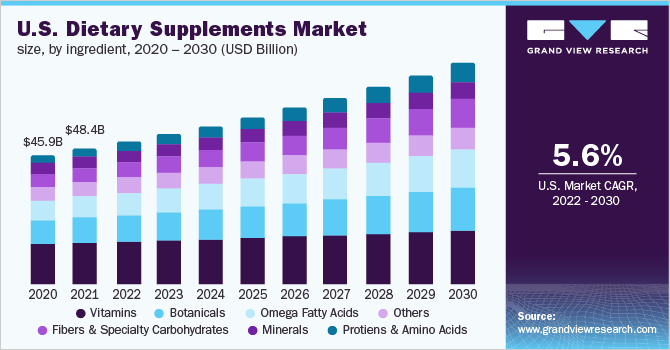
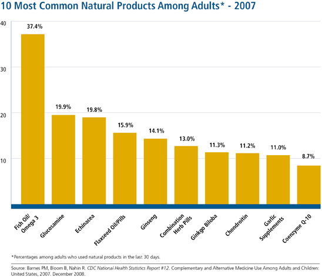
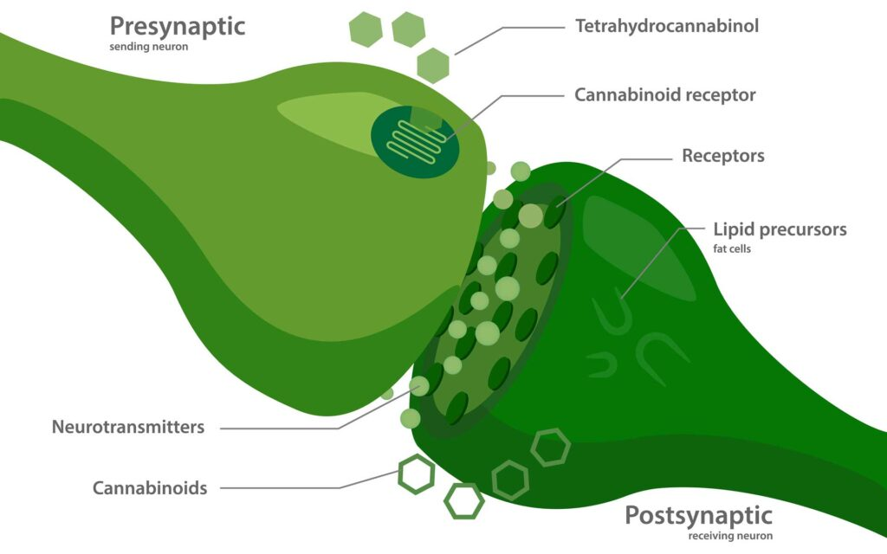

1 · Introduction to Complementary and Alternative Medicine
Instructional Objectives
- Define complementary and alternative medicine.
- Describe the rationale for selecting complementary and alternative medicine over allopathic medicine.
- Examine the five domains of complementary and alternative medicine.
- Discuss the National Center for Complementary and Alternative Medicine (NCCAM).
- Define hypnosis, meditation, imagery, relaxation therapy, and biofeedback.
- Describe appropriate patient education for common complementary and alternative medicine.
1.1 Defining the Landscape IO 1
Conventional healthcare is the system in which healthcare professionals — physicians, physician assistants, nurse practitioners, pharmacists, physical therapists, and nurses — treat symptoms and diseases using drugs, radiation, or surgery. It travels under several other names, all of which mean the same thing: allopathic medicine, biomedicine, mainstream medicine, orthodox medicine, and Western medicine.
Complementary and alternative medicine refers to a broad range of health practices, approaches, and products that are not traditionally part of conventional Western medicine. The single most testable distinction in this lecture is the one between the two halves of that phrase:
| Term | Defining relationship to conventional care |
|---|---|
| Complementary medicine | Used together with conventional medicine |
| Alternative medicine | Used in place of conventional medicine |
Integrative medicine is a patient-centered, whole-person approach that combines conventional medicine with evidence-based complementary therapies. It emphasizes wellness, prevention, and the therapeutic relationship, and uses multiple treatment modalities when appropriate — for example medication plus physical therapy plus yoga or acupuncture.
Functional medicine is also whole-person and patient-centered, but its organizing idea is different: it focuses on the potential underlying contributors to disease, weighing lifestyle, nutrition, environment, genetics, and psychosocial factors. Prevention uses nutrition, exercise, sleep, and smoking cessation; treatment uses dietary change, stress reduction, physical activity, and evidence-based supplements.
| Functional medicine | Naturopathic medicine |
|---|---|
| An approach to patient care | A healthcare profession |
| Can be used by physicians, osteopathic physicians, physician assistants, nurse practitioners, and others | Practiced by naturopathic doctors |
| Focuses on identifying contributors to disease | Emphasizes natural therapies and the body's healing capacity |
| Often uses nutrition, exercise, sleep, and stress management | Often uses nutrition, herbs, supplements, hydrotherapy, and acupuncture |
Hippocrates, often called the Father of Medicine, anchors the historical end of this material. He is credited with “Let food be thy medicine,” and the original Hippocratic Oath commits the physician to order the best diet for the sick according to judgment and means, and to take care that patients suffer no hurt or damage.
The National Center for Complementary and Integrative Health is the federal government's lead agency for scientific research on complementary and integrative health approaches. It sits within the National Institutes of Health, inside the United States Department of Health and Human Services. It conducts and supports research on the safety, effectiveness, and mechanisms of complementary health practices, and provides evidence-based information for patients and healthcare professionals. Note what it is not: it does not license practitioners, approve products, or accredit training programs.
1.2 Why Patients Choose These Approaches IO 2
The lecture gives six reasons for the popularity of complementary and alternative medicine:
- Perceived as natural and safe
- Desire for greater control over personal health
- Dissatisfaction with conventional treatments or outcomes
- Interest in a more holistic, patient-centered approach
- Easy access to information, products, and services
- Value placed on the time, attention, and therapeutic relationship offered by practitioners

1.3 The Clinician's Role and Patient Counseling IO 6
Many clinicians receive limited formal training in these therapies, which makes a deliberate approach more important rather than less. The lecture asks clinicians to:
- Maintain an open, respectful, and nonjudgmental dialogue
- Routinely ask patients about complementary and alternative use
- Evaluate these therapies using the best available scientific evidence
- Direct patients to reliable sources — the national center, the National Institutes of Health, the Centers for Disease Control and Prevention, and peer-reviewed literature
- Monitor for safety, including herb-drug and supplement-drug interactions
The lecture then gives a checklist of questions to raise with a patient who is considering a therapy. These are high-yield precisely because they are a list:
| Ask… | Why it matters |
|---|---|
| Is there research to support the therapy? | Separates evidence from testimonial |
| Does it require stopping conventional treatment? | Converts complementary use into alternative use, the higher-risk pattern |
| Are there substantial side effects? | “Natural” does not mean inert |
| Does the practitioner make unfounded claims, such as curing cancer? | A direct marker of a predatory offering |
| Does treatment require travel to another country? | Removes the patient from any accountable system of care |
| Is the practitioner licensed by the state for that specific therapy? | Licensure requirements vary by state and by therapy |
| Is it offered by an established medical institution? | A reassuring rather than alarming feature |
| How expensive is it, and are there out-of-pocket costs? | Financial harm is still harm |
1.4 The Five Domains IO 3
The teaching framework for this lecture divides complementary and alternative medicine into five domains. Learn them as a set — the exam is far more likely to ask which domain a therapy belongs to than to ask for a definition in isolation.

1.5 Whole Medical Systems IO 3
Whole medical systems are practices built on complete systems of theory and practice that evolved separately from conventional medicine, many of them centuries before it. Each has a defined philosophy and its own explanation of disease, diagnosis, and therapy. The four examples are Ayurveda, homeopathy, naturopathy, and traditional Chinese medicine.
Ayurveda is the traditional medical system of India and one of the world's oldest healing systems, still an important component of healthcare there. The name comes from the Sanskrit ayur (life) and veda (knowledge or science). Health is believed to result from balance among the body's fundamental energies, the doshas; illness is believed to arise when they become imbalanced. Doshas derive from combinations of five elements — space (ether), air, fire, water, and earth — and most people are believed to have one dominant dosha.

After determining the balance of doshas, the practitioner designs an individualized plan using diet, herbs, massage, meditation, yoga, and internal cleansing (therapeutic elimination). Research is limited to studies of individual herbs such as turmeric and ashwagandha rather than of the complete system.
Homeopathy was developed in Germany in the late 1700s. The name comes from the Greek homeo (like) and pathos (disease). It rests on two theories:
| Theory | Claim | Lecture's example |
|---|---|---|
| Law of similars (“like cures like”) | A substance producing symptoms in healthy people can treat similar symptoms in illness | Cutting onions causes burning, teary eyes and a runny nose, so Allium cepa (onion) is used for colds or hay fever |
| Law of minimum dose | The lower the dose, the greater the therapeutic effect | Remedies undergo repeated dilution and shaking, a process called succussion |
Products may be derived from plants (red onion, poison ivy, belladonna), minerals (arsenic), or animals (crushed whole bees). The theory proposes that remedies retain therapeutic properties despite extensive dilution.
Naturopathy is founded on the healing power of nature and the body's inherent capacity for healing. It emphasizes prevention, a healthy lifestyle, and treatment of the whole person, and focuses on finding the cause of disease rather than only treating symptoms. Its therapies include hydrotherapy, dietary counseling, nutritional supplementation, medicinal herbs, acupuncture, physical therapies such as heat and cold, mind-body therapies, and exercise therapy.
Traditional Chinese medicine originated in China and evolved over thousands of years. Common practices include acupuncture, herbal medicine, dietary therapy, massage, tai chi, and qigong. A vital force of life called Qi (pronounced “chee”) is believed to flow along pathways called meridians, sometimes described as an energy highway. Disease is thought to result from disruption or imbalance in the flow of Qi, and health is believed to depend on balance between the opposing and complementary forces of Yin and Yang. Humans are understood as interconnected with nature, and five elements — earth, fire, water, wood, and metal — form the basis of many concepts.


Several practices have been evaluated in clinical studies. Acupuncture and tai chi may improve quality of life and help manage certain pain conditions. Evidence for Chinese herbal products varies by product and condition, and some have been found to contain heavy metals, pesticides, and microorganisms. Herb-drug interactions should be considered when counseling patients.
1.6 Mind-Body Medicine IO 5
Mind-body medicine focuses on the interactions between the brain, mind, body, and behavior and their influence on health. Scientific evidence supports benefits for several of these interventions, and many are now integrated into conventional healthcare — used for chronic pain, anxiety and stress-related disorders, insomnia, headache, and cancer-related symptoms. Behavioral, psychologic, and spiritual techniques are used to reduce symptoms, improve coping, and enhance quality of life.
Objective 5 asks you to define five specific techniques, so they are worth holding side by side:
| Technique | Definition |
|---|---|
| Biofeedback | Electronic monitoring devices give feedback about physiologic functions so the patient learns to control them; principle is “anything that can be measured can be changed” |
| Guided imagery | Uses one or more senses to create a detailed mental experience (visualization is narrower: “seeing” images in the mind's eye) |
| Hypnosis | A state of focused attention and reduced peripheral awareness with an enhanced capacity for response to suggestion |
| Meditation | Intentionally focusing attention and awareness |
| Relaxation therapy | Promotes the relaxation response, which counteracts the physiologic effects of stress |

Monitored functions include heart rate, blood pressure, muscle activity, skin temperature, breathing patterns, and brain activity. Sensors are placed on the body, information is displayed in real time visually or audibly, and patients learn to modify their responses through guided practice. Multiple sessions are typically required. Evidence supports biofeedback as an adjunctive therapy for migraine, tension-type headache, stress-related disorders, and some pelvic floor dysfunctions. The goal is self-regulation without reliance on the monitoring equipment.
| Biofeedback type | Sensor placement | Indications |
|---|---|---|
| Electromyographic | Skin, detecting electrical activity related to muscle tension | Tension-type headache, migraine, physical rehabilitation, pelvic floor dysfunction and incontinence |
| Breathing | Chest and abdomen | Anxiety and stress management; develops slower, deeper diaphragmatic breathing |
Hypnosis deserves special attention because the lecture spends a slide on myths. Clinical hypnotherapy uses guided relaxation, focused attention, and therapeutic suggestion. The exact mechanism is poorly understood, and individuals vary in responsiveness. Indications include acute and chronic pain, anxiety, stress and phobias, irritable bowel syndrome, nausea and vomiting, procedure-related distress, habit disorders, insomnia, and adjunctive support during childbirth.
| Myth | Reality |
|---|---|
| Hypnosis is only entertainment | Clinical hypnosis is a therapeutic technique used as an adjunct to medical and behavioral treatment |
| People lose consciousness or memory | Most individuals remain aware and remember the session |
| The therapist controls the patient | People cannot be forced to act against their values or wishes |
| Hypnosis is the same as sleep | Hypnosis is a state of focused attention, not sleep |
Meditation may help reduce stress, anxiety, chronic pain, and insomnia, and can improve coping and quality of life in chronic illness. It works by promoting a physiologic relaxation response, increasing awareness of thoughts, emotions, and behaviors, and reducing automatic reactions to stress. The two most commonly studied forms are:
- Transcendental meditation — silently repeating a mantra, traditionally 20 minutes twice daily; studied for stress, anxiety, and cardiovascular health.
- Mindfulness meditation — being intensely aware of what one is sensing and feeling in the moment, without interpretation or judgment; often practiced through mindful breathing.
Relaxation therapy may be combined with meditation, guided imagery, or hypnotherapy. The relaxation response is associated with slower breathing, decreased heart rate, and lower blood pressure. Techniques include progressive muscle relaxation (systematically tensing and relaxing muscle groups to recognize and reduce tension) and guided imagery (for example a beach: the smell of salt water, the sound of waves, the warmth of the sun).
1.7 Biologically Based Practices IO 3
Biologically based practices use naturally occurring substances to promote health or manage disease: botanical medicine, natural products and supplements, chelation therapy, and diet therapies. Benefits and risks vary, and evidence, product quality, and potential drug interactions should be evaluated before use.
Botanical medicine is the use of plants or plant extracts for medicinal purposes, consisting of plant materials, algae, macroscopic fungi, or combinations. Forms include solutions such as tea, powders, tablets, capsules, elixirs, topicals, and injections.
Dietary supplements are among the most commonly used complementary health approaches and are widely available without a prescription. Common products include vitamins, minerals, probiotics, botanicals, and specialty supplements. Patients often use them without discussing them with healthcare professionals, so potential benefits, adverse effects, and drug-supplement interactions must be actively considered.
Chelation therapy works by a defined mechanism: chelating drugs bind with metals and enhance their excretion from the body. Established medical uses include lead poisoning, iron overload, and other heavy metal toxicities. Common environmental exposures are lead (old paint, plumbing), arsenic (well water, rice), and mercury (fish).

Diet therapies are specialized dietary approaches such as Mediterranean, plant-based, and intermittent fasting patterns. They may support prevention and management of chronic disease and are often used to promote overall wellness. Evidence varies by dietary pattern and clinical condition, and nutritional adequacy plus patient-specific factors should be considered before recommending change.
1.8 Manipulative and Body-Based Practices IO 3
These practices focus on the musculoskeletal system and soft tissues — bones, joints, muscles, and connective tissues — using hands-on techniques to improve function, reduce pain, and promote well-being. The lecture lists chiropractic, osteopathic manipulation, cupping, massage, reflexology, and gua sha.
| Practice | What it involves | Notes and evidence |
|---|---|---|
| Chiropractic | Spinal manipulation and other manual therapies for musculoskeletal conditions, especially of the spine | May also use exercise therapy, rehabilitation, heat and cold, massage, and lifestyle counseling |
| Osteopathic manipulative treatment | Hands-on techniques to diagnose, treat, and support recovery | Commonly applied to low back and neck pain |
| Cupping | A vacuum is created inside a cup placed on skin; suction elevates skin and underlying tissue | Thought to increase local blood flow; evidence limited, benefits primarily short term |
| Massage | Manipulation of the body's soft tissues | Practiced in most cultures throughout human history; types include Swedish, deep tissue, hot stone |
| Reflexology | Pressure applied to specific areas of feet, hands, or ears | Practitioners believe these areas correspond to specific organs or systems; evidence limited and inconsistent |
| Gua sha (scraping, coining, spooning) | Repeated strokes with a smooth-edged instrument | May increase local blood flow and reduce muscle tension; used for neck and back pain; evidence limited |

1.9 Energy Therapies IO 3
Energy therapies are based on the belief that biofields — energy fields — influence health and healing. Many traditions describe a vital life force such as Qi thought to flow through the body, and some therapies aim to manipulate these proposed fields to promote healing. Examples are Reiki, therapeutic touch, and acupuncture.
| Therapy | What it involves | Evidence per the lecture |
|---|---|---|
| Acupuncture | Insertion of thin needles into specific points; in traditional Chinese medicine, believed to influence the flow of Qi along meridians | One of the most widely used and studied; modern research suggests it may influence pain-processing pathways and benefit selected pain and symptom-management applications |
| Reiki | A biofield therapy; practitioners believe energy can be directed through the hands, placed lightly on or just above the body | Commonly used for relaxation, stress reduction, and well-being; evidence for specific clinical benefits remains limited and inconclusive |
| Tai chi | Slow, controlled movements with breathing and focused attention, based on balancing Qi; often called “meditation in motion” | May improve balance, physical function, and overall well-being |
2 · Herbal Medicines and Medical Marijuana
Instructional Objectives
- Describe commonly used herbal medicines.
- Discuss adverse effects and drug interactions of commonly used herbal medicines.
- Review the importance of inquiring about the use of herbal medicines during the patient history.
- Discuss the role of the Food and Drug Administration (FDA) in herbal medicine.
- Define medical marijuana, tetrahydrocannabinol (THC) and cannabidiol (CBD).
- Identify medical conditions that may benefit from medical marijuana use.
- Differentiate the delivery methods of medical marijuana.
- Discuss the pharmacokinetics and pharmacodynamics of medical marijuana.
- Discuss adverse effects and drug interactions of medical marijuana.
- Explain current Florida state laws regarding the use of medical marijuana.
2.1 · Objective d — Supplements, DSHEA, and the FDA IO d
Dietary supplements include herbs, vitamins and minerals, most of them plant-derived, plus hormones such as DHEA, melatonin, insulin and growth hormone. They are the most common alternative therapy in use today, with worldwide sales over $150 billion and more than $50 billion in the United States in 2021. The whole regulatory picture follows from one statute.
| What people assume | What DSHEA actually provides |
|---|---|
| The FDA checks purity before sale | No standardized purity or bioavailability guarantees exist |
| Manufacturers must report harms | No requirement for reporting adverse effects |
| Supplements are held to drug standards | They are not “drugs”; FDA oversight is much less than for over-the-counter drugs |
| Health claims are vetted | Drug efficacy claims are prohibited — labels must say claims have “not been evaluated or approved by the Food and Drug Administration” |
| The FDA polices advertising | False or misleading advertising and adverse events go through the Federal Trade Commission |

2.2 · Objective a — Commonly Used Herbal Medicines IO a
Some vocabulary first. A botanical is a substance made from part of a plant — bark, roots or leaves. Herbalism is the study and practice of using plant material for food, medicine and health promotion. An herbalist or herbal practitioner has undergone specific study and supervised practical training to achieve competence in treating patients, and phytotherapy is the term used primarily in Europe for treating and preventing disease with herbal medicines. Preparations include teas and tinctures (both rapidly absorbed; tinctures contain alcohol), capsules, tablets and tea pills.
Herbal medicine is not fringe pharmacology — a great deal of the formulary descends from it: morphine from opium poppy, digitalis (digoxin) from foxglove, reserpine from rauwolfia, aspirin from willow bark, quinidine from the cinchona tree, and the vinca alkaloids from periwinkle.

| Supplement | What it is used for |
|---|---|
| Fish oil / omega-3 (DHA, EPA) | Mild fall in blood pressure and triglycerides, reduced platelet aggregation and inflammation; DHA more for cognition and fetal brain and eye development, EPA more for inflammation and vasodilation |
| Glucosamine ± chondroitin | Osteoarthritis and joint problems; glucosamine from proteins and shellfish, chondroitin from animal cartilage |
| Methylsulfonylmethane (MSM) | Mainly osteoarthritis; also gastrointestinal upset, musculoskeletal pain, allergies, immune support |
| Flaxseed | Hypercholesterolemia, cardioprotection, immune function; contains omega-3 and alpha lipoic acid |
| Ginseng | Fatigue, sexual dysfunction, stomach disorders, asthma; avoid with caffeine |
| Chamomile / lavender / lemon balm | Sleeplessness, anxiety, gastrointestinal upset; lemon balm also studied in dementia and Alzheimer disease |
| Echinacea | Common cold and infection, on the premise it stimulates immunity — may reduce chance of illness but not its length |
| Peppermint | Digestive disorders, irritable bowel syndrome, colds, headaches; oil topically for aches and itching |
| Milk thistle (silymarin) | Toxic liver damage, chronic inflammatory liver disease, cirrhosis, chronic hepatitis (especially hepatitis C); antioxidant, anti-inflammatory, antifibrotic |
| Green tea (EGCG) | Studied for cancer, diabetes and heart disease |
| Turmeric / curcumin | Anti-inflammatory, anticancer and antioxidant properties in laboratory work; arthritis pain |
| Coenzyme Q10 | Mitochondrial energy production, densest in cardiac tissue; production declines with age |
| Garlic | Anti-inflammatory, cholesterol lowering, slightly lower blood pressure, slows atherosclerosis |
| Saw palmetto | Benign prostatic hyperplasia (NIH found no benefit; evidence mixed) and hair loss; a 5-alpha-reductase inhibitor |
| Capsaicin | Topical pain relief by reducing substance P; thermogenic, raises local circulation |
2.3 · Objective b — Adverse Effects and Drug Interactions IO b
“But it's all natural” is the belief this objective exists to dismantle. Supplements can increase bleeding risk, alter the response to anesthesia, and interact with prescription drugs.
| Herb / supplement | Interaction that matters |
|---|---|
| St. John's Wort | CYP3A4 inducer — speeds metabolism and reduces effectiveness of antidepressants, birth control pills, cyclosporine, digoxin, indinavir, irinotecan, phenytoin, phenobarbital and warfarin; may increase photosensitivity |
| Vitamin K, fish oil, “blood moving” herbs | Increase the anticoagulant effect of warfarin → bleeding |
| Green tea | Contains small amounts of vitamin K, making warfarin less effective — note this runs opposite to the row above |
| Vitamins C and E (antioxidants) | May reduce effectiveness of some chemotherapy |
| Glucosamine | Avoid in shellfish allergy; interacts with NSAIDs, diabetic agents including insulin; caution with potassium supplements and anticoagulants |
| Flaxseed | Can slow absorption of all medications; anticoagulants, diabetes medications, contraceptives, hormones, antihyperlipidemics |
| Chamomile | Cyclosporine and warfarin |
| Peppermint | Iron, cyclosporine, antibiotics and antifungals, seizure medications, antihypertensives; never on the face of infants or young children — inhaled menthol can cause serious effects |
| Garlic | Thins blood similarly to aspirin; interferes with saquinavir in HIV infection |
| Milk thistle | May lower blood glucose — caution in diabetes, hypoglycemia, or on glucose-altering drugs |
| Black cohosh | Discontinue and seek review for liver disorder or symptoms such as abdominal pain, dark urine or jaundice |
| Evening primrose oil | May increase bleeding on warfarin |
| Statins (the reverse direction) | Statins and diabetic medications lower coenzyme Q10; one study showed a nearly 40% fall in plasma CoQ10 |
| Multivitamins / multiminerals | One per day; not with milk or antacids; no salt substitutes (potassium); can alter blood pressure medications, diuretics, some antibiotics, NSAIDs, tretinoin and isotretinoin |
2.4 · Objective c — Asking About Herbs in the History IO c
Patients often do not volunteer herb or high-dose vitamin use. The lecture gives two reasons: they may assume “natural” products are harmless, and they may fear their provider will be skeptical. The provider side is equally blunt — prescriber ignorance about supplements is often not caused by a lack of reliable data but by the practitioner's own reluctance or disapproval about seeking that information out for patients.
The lecture also gives four questions to hand the patient: does the product promise rapid improvement in health or performance? Does it seem too good to be true? Does the manufacturer rest its case on a single study or a series of anecdotes? And who funded the research? That last question generalizes — most herbal studies are low quality, with small samples, flawed statistical design, possibly exaggerated findings, and tested products that may not match what a patient actually buys.
2.5 · Objective e — Medical Marijuana, THC and CBD IO e
The endocannabinoid system is two G-protein coupled receptors, CB1 and CB2, plus regulatory enzymes. It modulates pain, seizure threshold, appetite, digestion and mood, and may play a role in intraocular pressure. Phytocannabinoids are found in the flowers of the cannabis plant — more than 100 have been discovered, but only a few are well characterized, mainly delta-9 tetrahydrocannabinol (Δ9-THC) and cannabidiol (CBD). Terpenes give smell and may have an effect of their own.

| Δ9-THC | Cannabidiol (CBD) | |
|---|---|---|
| Receptor action | Partial agonist at both CB1 and CB2, higher affinity for CB1 | CB2 agonist (anti-inflammatory); reduces THC psychoactivity by altering CB1 shape |
| Psychoactivity | Yes — CB1 is in the central nervous system and throughout the brain | Major non-psychotropic cannabinoid |
| Other effects | — | Anti-anxiety, anti-nausea, anti-arthritic, anti-epileptic, anti-psychotic |
| Other sites | — | 5-HT1A (anxiolytic, antidepressant), desensitizes TRPV1, increases adenosine signaling, GPR55 antagonist, GABA-A |
| Metabolism note | First-pass metabolism yields 11-hydroxy-THC — longer lasting and more psychoactive than Δ9-THC | — |
2.6 · Objective f — Conditions That May Benefit IO f
Florida's qualifying conditions, per the Department of Health Office of Medical Marijuana Use: cancer, epilepsy, glaucoma, HIV/AIDS, post-traumatic stress disorder, amyotrophic lateral sclerosis, Crohn disease, Parkinson disease, multiple sclerosis, conditions of the same kind or class, a terminal condition diagnosed by a physician other than the certifying physician, and chronic nonmalignant pain caused by or originating from a qualifying condition and persisting beyond its usual course.
The evidence is more modest than the list implies. A 2015 meta-analysis found randomised controlled trials for chemotherapy-associated nausea and vomiting, appetite stimulation in HIV/AIDS, chronic pain, spasticity in multiple sclerosis, depression, anxiety, sleep disorder and glaucoma — with most studies showing only modest symptom improvement.
2.7 · Objective g — Delivery Methods IO g
Routes: edibles, nasal spray, oral, suppository, topical cream, inhalation and flower. The two the lecture contrasts directly are the two you should be able to separate cold.
| Oral | Inhalation | |
|---|---|---|
| Onset | 10–30 minutes | 60–90 seconds |
| Duration | 6–8 hours | About 2 hours |
| Best for | Chronic, long-term effect | Breakthrough symptoms |
| Poor choice in | Malabsorption — try suppository, inhaled or sublingual | Chronic obstructive pulmonary disease, or asthma triggered by inhalants |
2.8 · Objective h — Pharmacokinetics and Pharmacodynamics IO h
Dosing has no fixed schedule. The principle is low and slow — some recommend 4 mg three times daily and titrate — with good record keeping and follow-up with the primary care provider for other medication titrations. Over 10 mg of THC at once can produce euphoria.
Interaction data are thin, so predictions rest on cytochrome P-450. Use caution with narrow-therapeutic-window drugs, and expect interaction with sympathomimetics, central nervous system depressants and anticholinergics — alcohol, benzodiazepines, selective serotonin reuptake inhibitors and zolpidem.
2.9 · Objective i — Cannabis Adverse Effects and Interactions IO i
The safety profile is described as relatively positive: headache, dry eyes, dry mouth, dizziness, lightheadedness, numbness and cough; serious adverse effects rare; low to moderate dependence potential; and an active dose very far below the lethal dose. The dose-dependent split is testable:
| High CBD | High THC |
|---|---|
| Somnolence, decreased appetite, diarrhea, fatigue; possible effects on hepatic drug metabolism and fertility capacity | Anxiety, cholinergic deficits, immunosuppression; paranoid ideation and psychotic symptoms possible but rare |
Cannabinoid hyperemesis syndrome has major criteria of cyclical nausea and vomiting, a compulsion to bathe in hot water, chronic daily cannabis use for more than three years, and mild abdominal pain; minor criteria are age under 50, morning predominance, normal bowel habits, and negative laboratory, radiographic and endoscopic results. It is refractory to antiemetics and typically needs haloperidol or droperidol, with intravenous fluids and lorazepam helping; stopping cannabis takes weeks because of fat deposits. Three explanations are offered for the hot-water behaviour: disrupted hypothalamic thermoregulation, heat countering CB1 hyperstimulation, and “cutaneous steal” redistributing blood away from the gut.
2.10 · Objective j — Florida Law IO j
Florida's law passed in November 2016. Medical marijuana is approved by the state but still illegal federally, it is a recommendation from a physician, not a prescription, and it is allowed for home use only. Because the FDA banned cannabis for so long, little clinical research exists for many conditions.
| Route | Daily dose | 70-day supply limit |
|---|---|---|
| Edibles | 60 mg THC | 4,200 mg THC |
| Inhalation | 350 mg THC | 24,500 mg THC |
| Oral | 200 mg THC | 14,000 mg THC |
| Sublingual | 190 mg THC | 13,300 mg THC |
| Suppository | 195 mg THC | 13,650 mg THC |
| Topical | 150 mg THC | 10,500 mg THC |
| Smokable flower | 2.025 g | 2.5 ounces per 35 days |
3 · Animal-Assisted Therapy
Instructional Objectives
- Discuss the history of animal assisted therapy
- List the benefits of animal assisted therapy
- Outline the training requirements and certification to use animals as therapy
- Describe commonly used animals for animal assisted therapy.
- Discuss different types of canine assisted therapies.
- Discuss different types of equine assisted therapies.
3.1 · Objective 1 — History IO 1
| Date | Development |
|---|---|
| 600 BC | Ancient Greeks document horse-assisted therapy to raise the spirits of the incurably ill |
| 1860 | Florence Nightingale recommends small companion animals (birds) as an adjunct to healing, especially for the chronically ill |
| 1867 | In Germany, animals — birds, cats, dogs, horses — are integrated into a community for people with disabilities |
| Late 1800s | Research begins into the horse's ability to support physical recovery of humans |
| 1919 | Human-animal interaction (companionship with dogs) first used in the United States, for soldiers with post-traumatic stress disorder |
| 1944 | Pawling Convalescent Hospital, New York begins a comprehensive rehabilitation program for wounded and disabled veterans working with farm animals and caring for dogs |
3.2 · Objective 2 — Benefits IO 2
The benefits divide cleanly by modality, which is the most efficient way to hold them.
| Modality | Benefit the lecture claims |
|---|---|
| Hippotherapy | Bilateral rhythmic stimulation that mimics the human walking gait; neural and motor pathways benefit from motor exercises and cyclic motions |
| Equine-assisted psychotherapy | Processing what is happening in the moment; a non-judgmental, unbiased interactive experience; increased self-awareness through the horse's feedback and mirroring; may improve trust and secure attachment in traumatized youth |
| Horsemanship itself | Feeding, watering, exercising and grooming establish routine and structure; caring for and nurturing something else builds empathy |
| Equine-facilitated learning | Trust, honesty, connection, self-regulation, self-confidence; leadership and self-awareness; group and corporate team building |
| Medical education | Improved nonverbal communication and bedside manner — Dr. Allan Hamilton's “From Barnyard to Bedside” at the University of Arizona College of Medicine, since reproduced at medical schools in the United States and internationally |
3.3 · Objective 3 — Training and Certification IO 3
| Category | Training or certification required |
|---|---|
| Companion animal | None — no special training in helping a person cope with a disability |
| Emotional support animal | Training not required by law. A licensed healthcare or mental health professional may recommend one and provide supporting documentation |
| Service animal | Individually trained to do work or perform tasks — but the Americans with Disabilities Act does not require professional training; handlers may train the dog themselves |
| Hippotherapy | Occupational therapists, physical therapists and speech-language pathology professionals, certified by the American Hippotherapy Association: at least 3 years (6,000 hours) in practice, at least 100 hours of hippotherapy practice in the previous 3 years, and a passed multiple-choice examination |
| Equine-assisted therapy bodies | PATH International (Professional Association of Therapeutic Horsemanship International) and Eagala |
3.4 · Objective 4 — Which Animals, and Which Legal Category IO 4
This is the highest-yield table in the lecture, because the three categories carry different species limits and completely different legal protections.
| Companion animal | Emotional support animal | Service animal | |
|---|---|---|---|
| Also called | Pet | ESA | — |
| Species | Any | Usually cat or dog; may be a turtle, horse or rabbit | Dogs only — plus trained miniature horses as a reasonable modification |
| Role | Company, amusement, psychological support, extrovert display | Emotional comfort, companionship, friendship, affection | Individually trained work or tasks for a person with a disability |
| Training | None | Not required by law | Required, but may be owner-provided |
| Key law | — | Fair Housing Act (with an ESA letter) | Americans with Disabilities Act |
Three more Americans with Disabilities Act rules round this out. Only two questions may be asked: is the dog a service animal required because of a disability, and what work is the dog trained to perform. Any breed may be a service dog, and entry cannot be refused on breed alone. And a hospital must generally allow a service animal in the patient's room and anywhere else patients and the public may go — it cannot be excluded on the grounds that staff could provide the same service.
3.5 · Objective 5 — Canine-Assisted Therapies IO 5
| Type of service dog | What it does |
|---|---|
| Guide dog / Seeing Eye dog | Assists people who are blind or visually impaired with navigation and environmental awareness |
| Hearing or signal dog | Alerts a person with significant hearing loss or deafness when a sound occurs, such as a knock at the door |
| Psychiatric service dog | Detects the onset of psychiatric episodes (panic attacks, anxiety episodes) and lessens their effects. Cues: pacing, tremors, changed breathing, repetitive behaviors. Responses: nudging, retrieving medication, guiding to safety. Tasks: medication reminders, safety checks or room searches, interrupting self-injurious behavior, assisting disoriented individuals to safety |
| Sensory signal dog (SSigDOG) | Assists a person with autism spectrum disorder — distracts repetitive movements such as hand flapping with an unobtrusive signal like a discreet nudge, letting the person stop the movement |
| Seizure response dog | Barks to alert a family member or caregiver, presses alarm buttons or pre-programmed devices, stays beside the person to prevent injury, and stands next to them to break a fall |
3.6 · Objective 6 — Equine-Assisted Therapies IO 6
Why horses at all? They are sentient beings that perceive and feel, and they are prey animals — highly aware of their surroundings, social and herd animals that mirror the emotions of those around them (calm produces calm), establish boundaries, and seek a leader they can trust and who will protect them. They are exquisitely sensitive to how we present ourselves and highly responsive to human body language and nonverbal cues. That sensitivity is the therapeutic instrument.
The lecture names three equine modalities. Keep them apart by asking who is in the arena and what the goal is called.
| Hippotherapy | Equine-assisted psychotherapy | Equine-facilitated learning | |
|---|---|---|---|
| What it is | A physical, occupational or speech therapy treatment strategy using equine movement (Greek hippos = horse; American Hippotherapy Association definition) | Mental health treatment | Experiential learning promoting life skills for educational, professional and personal goals |
| Who delivers it | Occupational, physical or speech therapist | Mental-health therapist plus an equine specialist | Instructor or facilitator |
| Addresses | Functional limitations from neuromotor and sensory dysfunction — autism, neuromuscular disorders, cerebral palsy | Psychological disorders — anxiety, post-traumatic stress disorder, antisocial disorders, grief and loss, attention deficit/hyperactivity disorder | Leadership and life skills |
| Goals are called | Functional goals | Clinical goals | Learning goals |
| Person is called | Patient | Patient / client | Participant / learner |